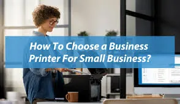
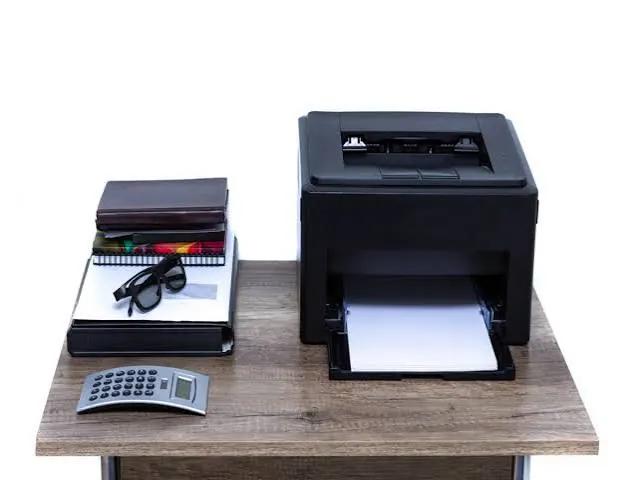

Office & business
How to Pick the Best Printer for a Small Business Office
Choose the right office printer for your small business. Compare inkjet and laser technology, running costs, speed, connectivity, security, and maintenance before buying.
Start With the Work Your Office Actually Does
When choosing a printer for a small business, getting the right one can make all the difference. If you're printing invoices, shipping labels and short documents, you'll have different requirements to a design studio printing colour proofs or a consultancy with lots of lengthy reports. Work out how many pages a week you print in your office and what you're printing.
Are you mostly printing in colour or black and white? Does your staff need to print double sided? How often do you scan or copy documents in your office? If you're using a printer that can handle an average 300 pages a month, your staff may get stuck if they suddenly need to print 500 pages in a few days. Using realistic figures will help you avoid overspending and choosing a printer that's too small.

Inkjet or Laser?
Inkjet printers use liquid ink which is sprayed onto paper. Due to their colour printing capabilities, they're often a popular option for small offices that need to print photos, graphics or specialist media sometimes. Many small inkjet printers are a low cost option, and some feature refillable ink tanks to help reduce costs for frequent printing. However, if you're printing a lot, using cartridge inkjet printers can be expensive. Depending on the model, ink can dry out if the printer isn't used much.
Laser printers use toner powder and a heating system. They’re normally a great choice if you're printing a lot of text based documents. They can produce crisp documents quickly and consistently. Monochrome laser printers are a great choice if you're printing invoices, contracts, forms and internal documents. Colour laser printers are available if you need to print business graphics, however be careful to compare the price and cost of consumables. Finding the right balance between colour quality, monthly print volume, speed and overall cost will help you pick the right one.
Work out the Overall Cost
Sometimes low cost printers can end up being expensive due to the low page yield of the cartridges. Work out how many pages the ink/toner cartridges can actually print. Work out the cost per page by dividing the cost of the consumables by how many pages they can print. The page yield quoted by the manufactures are just guidelines. The actual amount of pages you'll be able to print will depend on how much you're printing, what you're printing, the settings and how you use the printer.
You may also want to take into account other costs, such as paper, maintenance kits, drums, waste toner, printhead and service charges. Even though the printer may be a high cost option, it can be cheaper overall due to cheaper consumables and lasting longer. A small business can benefit from knowing their running costs will be predictable.
Speed and Paper Capacity
Print speed is often quoted in pages per minute. However, there are other factors to consider. How long does the first page take to print? How long is the warm up time? How fast can it print double sided? How well does it cope with complex documents? If multiple members of staff are trying to print at the same time, a slow printer can cause delays. If you're a small team and printing infrequently, then a medium speed printer may be enough. However, if you're a busy reception, accounts or dispatch area, a faster printer can help save time.
How much paper can it hold in the standard paper tray? If you're not printing a lot, a small paper tray could be perfect. However, if your staff are constantly refilling it, it could cause some issues. Does it handle different paper sizes, envelopes, labelling and heavy paper? Double sided printing can be a useful feature to help save on paper and produce professional looking documents.
All-in-One Printer
Many multifunction printers offer printing, scanning and copying. Some also offer faxing capabilities. This can help save space on your desks and reduce the number of devices you have to manage. An inbuilt scanner can be useful if your staff need to scan signed forms, receipts, ID and customer records. An automatic document feeder can help to scan multiple pages.
However, if you already have a reliable scanner or don’t need to copy often, it may be better to go for a separate printer. When looking at scanners, look at the resolution, double sided scanning, document feeder and software. Ensure the features your staff will need are easy to use.
Connectivity
A wireless printer can be useful to place where you like. However, if you're using a printer in your office, ethernet is usually the best option to ensure it has a steady connection. USB can still be useful to connect directly or to help with any issues. If you have a variety of devices (Windows, Mac OS, Chrome OS, Android and iOS), ensure it's compatible.
Ensure the printer can connect to your preferred printing system. Some offices use cloud, print management and secure print. If it can connect easily to your current software, it'll make it easier to set up. Ensure there are drivers and firmware for your operating systems.
Security
Your printer is a networked device and may store copies, address books and settings. Choose a printer with the correct security features. Secure network, admin password, firmware updates and secure printing features. If you're printing documents with customer, staff or financial information, secure print can be a useful feature. This allows your documents to be held until the authorised person comes to collect them.
Change the admin details to something other than the defaults. Keep the firmware updated. Ensure the printer is on a trusted network. Limit the access to the admin settings. If you're a larger small business, having print accounting or user permissions can help to reduce unnecessary printing and highlight any unusual high printing. To get the most out of your security features, make sure someone is managing them.
Space, Noise and Support
Work out how much space you have. Ensure there's enough room to open the paper tray, scan lid and printed pages. Look at how much space the manufacturer recommends and ventilation. If you have a small desk, a small printer could be perfect. However, if you have a larger office printer, you may need a stand. If you're printing near your customers, noise can be an issue.
Find out how easy it is to source consumables locally. Is there support in your local area? How long is the warranty? If the printer is difficult to repair, it can cause expensive downtime. Look at the onsite support, replacement parts and consumables. If printing is essential, keep a compatible spare toner/ink.

Buying Guide
Find 2-3 printers that match your printing requirements. Look at the recommended monthly print volume. Are genuine consumables easy to source and affordable? Does it have double sided printing? Scanning? Wireless? Mobile printing? What's the warranty? Can it print your paper types?
Ask those who will be using the printer what issues they have. Are they constantly changing cartridges? Getting paper jams? Slow first page printing? Unreliable wireless? If you can solve their issue by buying a new printer, it'll be more useful than having lots of features that aren't used.
Conclusion
Finding the right printer for your small business depends on what you're printing, how much you print a month, your budget and environment. Choosing between inkjet and laser, calculating the cost per page, choosing the right speed and paper capacity and ensuring it connects and is secure can help to reduce your running costs, reduce any disruptions and give your staff a reliable device..
Need a hand with your printer or laptop?
Printerworld sells printers, laptops and genuine supplies, and repairs and services both. Bring in your model number and we will help you get it right.